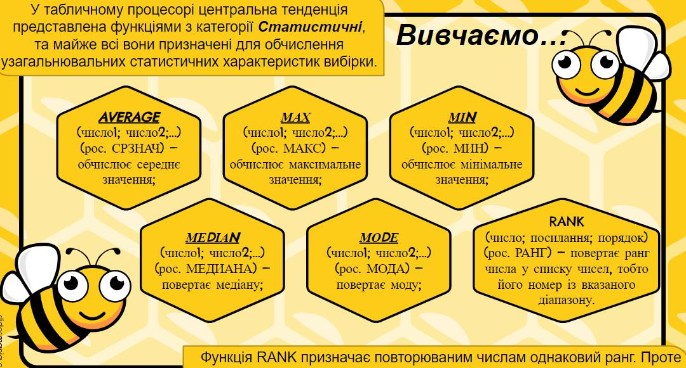

Ви дізнаєтесь…
• що таке аналіз даних та які виділяють етапи аналізу даних;
• у чому суть статистичного підходу до опрацювання даних;
• що є основними статистичними характеристиками вибірки;
• як будують ряди даних;
• які функції можна використовувати для знаходження центральної тенденції в середовищі табличного процесора.
У чому суть статистичного підходу до опрацювання даних?
Що є основними статистичними характеристиками вибірки?

Які функції можна використовувати для знаходження центральної тенденції в середовищі табличного процесора?
